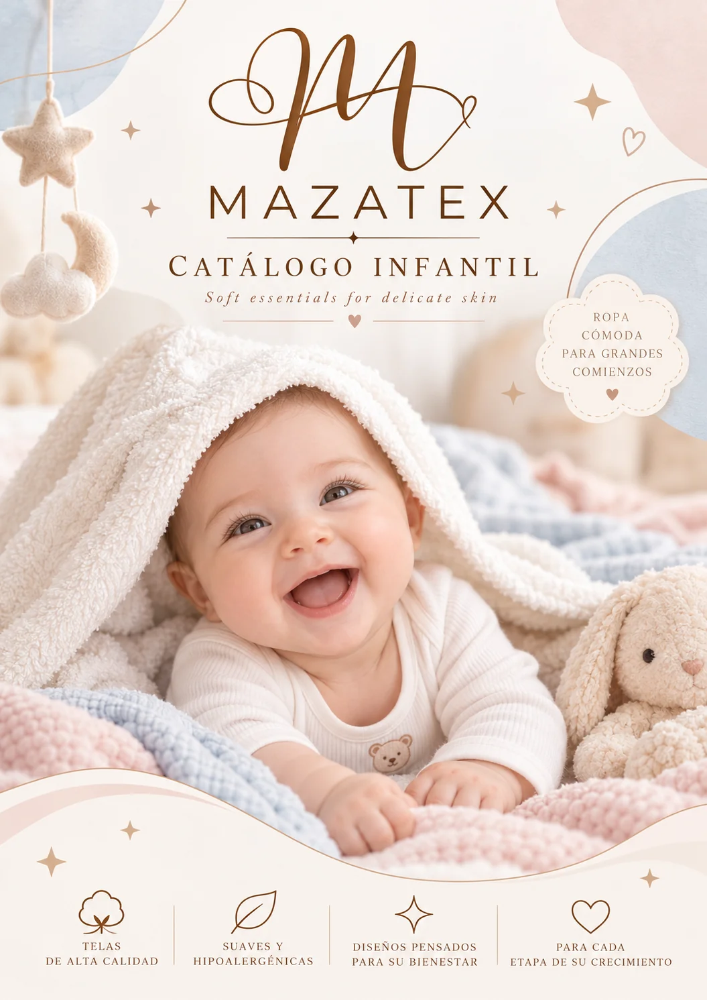
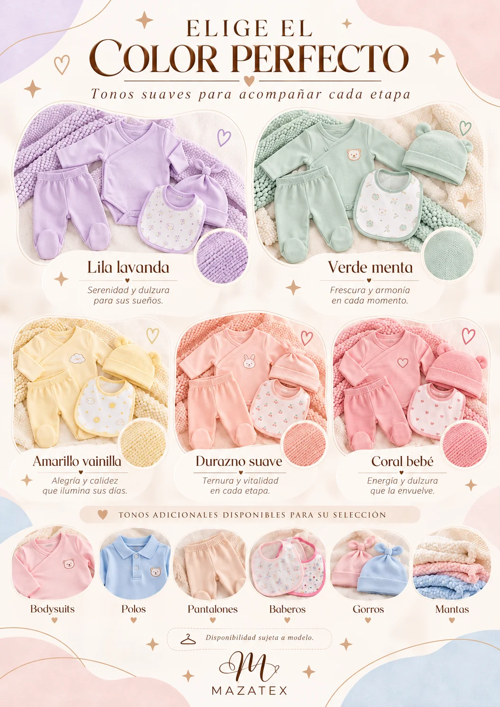
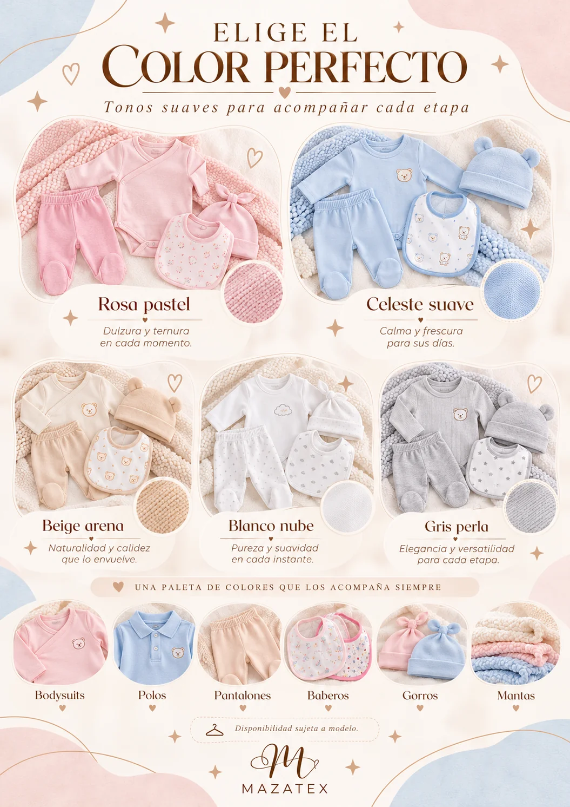

Una portada más premium
para una marca que abraza.
Descubre una experiencia digital delicada, moderna y emocional para presentar la colección MAZATEX. Suavidad, tendencia y ternura en una vitrina diseñada para enamorar a primera vista.

como un
abrazo ♡
Confort cotidianoPara explorar sin límites
Confeccionado con cariñoDetalles que importan
Suavidad al tactoDiseñado para el bienestar
Tallas 1, 2, 4 y 6Cada etapa de crecimiento
Nuestra colección
Prendas esenciales para llenar de ternura cada día.
Las fotografías son referenciales. Confirma el color, material, talla y disponibilidad antes de realizar tu pedido.
Elige el color perfecto
15 tonos inspirados en momentos dulces. Selecciona tu favorito para añadirlo a tu pedido.
Colores que cuentan historias.

Una talla para
cada etapa.
Sabemos que cada bebé crece a su propio ritmo. Esta tabla es una referencia para encontrar una prenda cómoda.
Elegir mi prenda ↗| Talla | Edad referencial | Etapa |
|---|---|---|
| 1 (RN) | 0 – 2 meses | Recién nacidos |
| 2 | 2 – 6 meses | Primeros meses |
| 4 | 6 – 9 meses | Más movimiento |
| 6 | 9 – 12 meses | Hasta un año |

Pequeños detalles,mucho amor ♡
Cada detalle
es una forma
de cuidar.
En MAZATEX encontrarás ropa para bebés confeccionada con amor, comodidad y calidad, pensada para acompañar cada etapa de los más pequeños.
Te ofrecemos prendas modernas, suaves y a precios accesibles, ideales para consentir a tu bebé.
Descubre nuestro
catálogo completo.
Inspírate con los diseños, los accesorios y la guía visual de nuestros tonos pastel.
Descargar catálogo PDF ↓¿Cómo podemos
ayudarte?
Arma tu selección y comparte tu pedido para consultar colores, tallas y disponibilidad. Estamos en Gamarra, Lima.
Hagamos especial su próximo conjunto ♡
¿Tienes una prenda en mente? Añádela al carrito de consulta o escríbenos.
La solicitud no constituye una compra ni un pago. Confirmamos primero los detalles contigo.